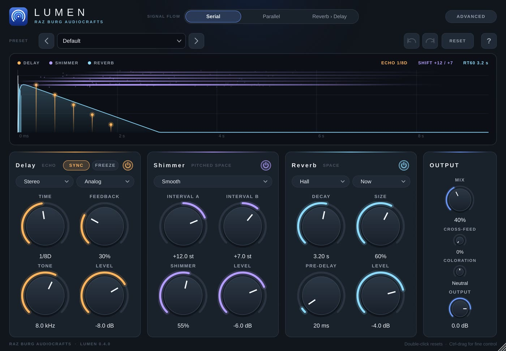

Lumen User Guide
Lumen is a reverb, delay and shimmer reverb processor by Raz Burg AudioCrafts. Three engines can run alone or together, in series or in parallel, with a global Coloration stage on the output.
Quick start
- Lumen opens fully dry: every engine is off and Coloration sits at Neutral. You hear your track unchanged.
- Switch an engine on with the round power button at the top right of its column.
- Pick a starting point from the preset menu in the toolbar, then adjust to taste.
- Use Mix to blend the effect with the dry signal. On a send/aux track set Mix to 100%.
- Undo and Redo step back and forward through your last 100 changes. Reset returns every control to its default (fully dry).
Toolbar
- Preset menu: click the preset name to browse the factory presets by category. The arrows step to the previous or next preset.
- Undo / Redo: each finished move of a control, switch or menu is one step. Loading a preset or pressing Reset is also one step, so it can be undone.
- Reset: returns the whole plugin to its initial state (all engines off, Coloration neutral).
- ? : opens this guide.
Header
- Signal Flow chooses how the engines are connected:
- Serial: Delay feeds Shimmer, which feeds Reverb. Echoes are smeared into the space, and the shimmer gets an extra layer of room.
- Parallel: each engine hears the dry signal on its own, and their outputs are summed. Clearer and more defined.
- Reverb › Delay: the reverb comes first and the delay repeats the reverb tail. Good for big ambient throws.
- Advanced: shows every parameter of each engine, below its main knobs.
Display
The display shows one time line with the dry hit, the delay repeats, the rising shimmer and the reverb envelope, each in its engine's colour. It follows every knob move immediately.
Delay
A tempo-synced stereo delay with analog, tape and lo-fi characters.
- Time: delay time in milliseconds when Sync is off, or a note division (1/64 to 4/1, including dotted and triplet values) when Sync is on.
- Feedback: how many repeats. Above 100% the repeats grow and saturate, for runaway dub effects.
- Tone: high-cut on the repeats. Lower values give darker, softer echoes.
- Level: output level of the delay.
- Mode: Stereo, Ping-Pong (repeats bounce left and right), Dual (independent left and right lines) or Wide (the right side is offset by a few milliseconds for extra width).
- Character: Clean (digital), Analog (warm, slightly saturated), Tape (wow, flutter and tape saturation) or Lo-Fi (band-limited and gritty).
- Sync: locks the time to the host tempo.
- Freeze: holds the current repeats forever and ignores new input. Turn it off to release them.
- Advanced: Low-Cut (thins the repeats), Drive (saturation inside the feedback loop), Ducking (lowers the repeats while you play, so they bloom in the gaps), Mod Rate and Mod Depth (pitch movement of the repeats).
Shimmer
A shimmer reverb: a lush, modulated reverb with pitch shifters inside its feedback loop. Each time the tail goes round the loop, part of it is shifted up (or down) again, so the sound climbs octave by octave into a bright, choir-like wash that grows out of what you play. It is a complete reverb of its own and works without the Reverb section.
- Interval A: the main pitch step of each pass, from -24 to +24 semitones. +12 (an octave up) is the classic shimmer; +7 is a fifth, +19 an octave and a fifth.
- Interval B: a second, quieter voice, for example +7 over the octave, or -12 for an octave down underneath. Off at 0.
- Shimmer: how much of the tail is pitch shifted on each pass, which sets how fast and how far the sound climbs. Low values add a gentle halo; high values bloom into a rising cloud.
- Level: output level of the shimmer.
- Voice: Smooth, or Reverse (each fragment of the shifted sound plays backwards: softer, like an organ).
- Advanced: Decay (length of the tail), Size (size of the space; bigger also climbs more slowly), Diffusion (how quickly echoes melt into a smooth wash), Mod (gentle movement that keeps the tail lush), Tone (how high the climbing octaves may go before they are softened) and Low-Cut (keeps low end and downward shifts from getting muddy).
- Tip: for the classic sound start with Interval A at +12, Shimmer around 50 % and a long Decay, then use Tone to choose between a soft glow and a bright sparkle.
Reverb
An algorithmic reverb: six types of space, each available in five eras.
- Decay: how long the tail lasts (RT60), from 0.2 to 20 seconds.
- Size: the size of the space. Larger sizes spread the early reflections and slow the build-up. Changing Size never bends the pitch: Lumen starts the new space and lets the previous tail ring out.
- Pre-Delay: time before the reverb starts. 20 to 80 ms keeps vocals and drums clear in front of the space.
- Level: output level of the reverb.
- Mode: the type of space. Hall, Plate, Room, Chamber, Bloom (slow swell) or Cloud (dense, diffuse wash).
- Era: voices the chosen mode after the studio reverbs of each decade, listed from oldest to newest. Every era works with every mode, and the eras are level-matched, so switching changes the colour, not the volume.
- 60s: a console send into tape and a physical space. Band-limited (thin lows, no air), gently saturated and mid-forward, with no movement. Chamber becomes a tiled echo chamber fed by a tape delay, a speaker and a microphone pair, and Room becomes a small chamber with hard, reflective walls.
- 70s: analog plates and the first digital units. Dark and soft on top, grainy, with sparser diffusion and slow movement.
- 80s: the classic digital halls. Bright but band-limited, with the grit of 12-bit, reduced-rate converters and a strong chorus-like movement.
- 90s: later digital halls. Smooth random movement on every line, lush diffusion, a long bass decay and the brightest, most open top end of all the eras. Hall and Cloud switch to a dedicated random-hall algorithm (Cloud with a slower, concert-hall voice).
- Now: clean, full range and transparent, with gentle movement.
- Advanced: Diffusion (how quickly echoes blur into a tail), Mod Rate and Mod Depth (movement that avoids metallic ringing), Low-Cut and High-Cut (shape the tail), Width (from mono to full stereo).
Output
- Mix: balance between dry and processed sound. With every engine off Lumen stays fully dry whatever Mix is set to.
- Cross-Feed: sends the end of the chain back to its start, so the engines feed each other. Use small amounts for richer, longer tails.
- Coloration: a global tone stage after everything else. Shine (right) adds bright 2nd and 3rd harmonics to the upper frequencies and a gentle presence lift. Dark (left) adds warm low-order harmonics to the low mids and softens the top. Neutral (centre) is an exact bypass. Double-click to return to Neutral.
- Output: final output level.
Working with controls
- Drag up/down or left/right to turn a knob. Hold Cmd (Mac) or Ctrl (Windows) while dragging for fine control.
- Double-click a knob to return it to its default value.
- Hover over a control to see a short description.
- The window can be resized from the bottom-right corner. Everything scales and stays sharp.
Using Lumen on an insert or a send
- Insert: put Lumen directly on a track and set Mix to taste, usually 10 to 35%.
- Send/aux: put Lumen on an aux or FX track, set Mix to 100%, and send to it from several tracks. The presets in the Send category are set up this way.
- Keep Pre-Delay above 20 ms and use Low-Cut on the reverb to keep the mix clear.
Preset categories
- Vocals: plates, halls, slapback and throws for lead and background vocals.
- Drums: snare plates, drum rooms and big 80s snares.
- Guitars: echoes, swells, rooms and doublers.
- Keys & Piano: halls and rooms for piano, Rhodes and organ.
- Synths & Pads: shimmer pads, lush halls and rhythmic echoes.
- Strings & Orchestral: scoring stages and concert halls.
- Ambient & FX: freezes, reverse shimmers and runaway feedback.
- Vintage: the 60s, 70s, 80s and 90s studio sounds.
- Send (100% Wet): ready-made aux returns.
Licence
- Lumen is free. Get it from My plugins at audiocrafts.razburg.com, with your free site account.
- Lumen is protected with iLok: redeem the iLok code from My plugins in iLok License Manager with your free iLok account, and activate Lumen on up to two computers. To move it to another computer, deactivate it in iLok License Manager first.
Updates
When you open Lumen, it quietly checks audiocrafts.razburg.com for a newer version. If there is one, a small notice appears at the bottom right of the window. Click Download to open My plugins in your browser, or click the x to hide the notice until the next release. The check never affects the sound, and nothing appears when you are offline.
Support
Visit audiocrafts.razburg.com for updates and support.